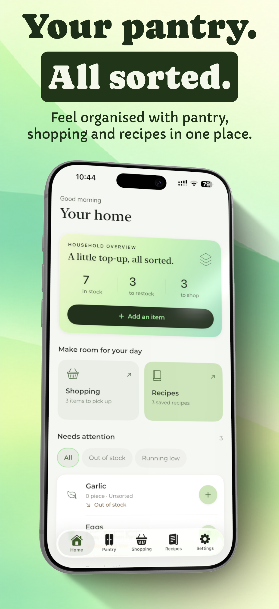
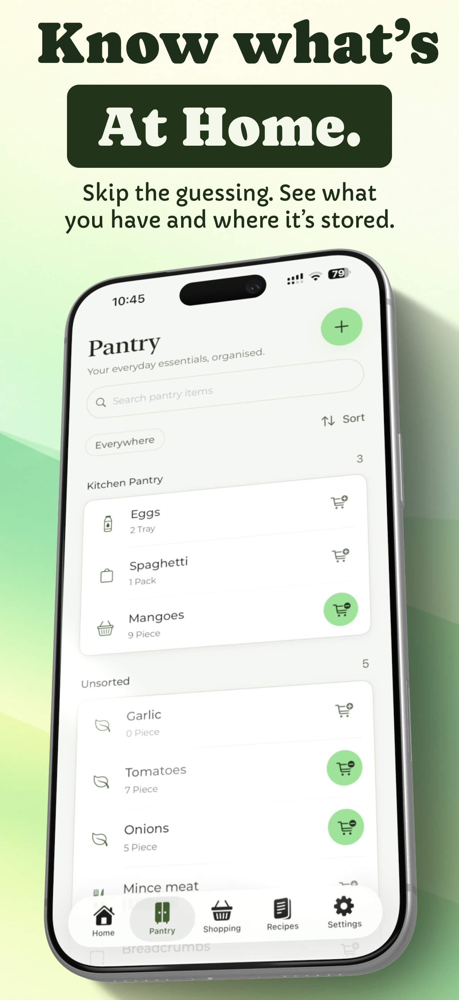
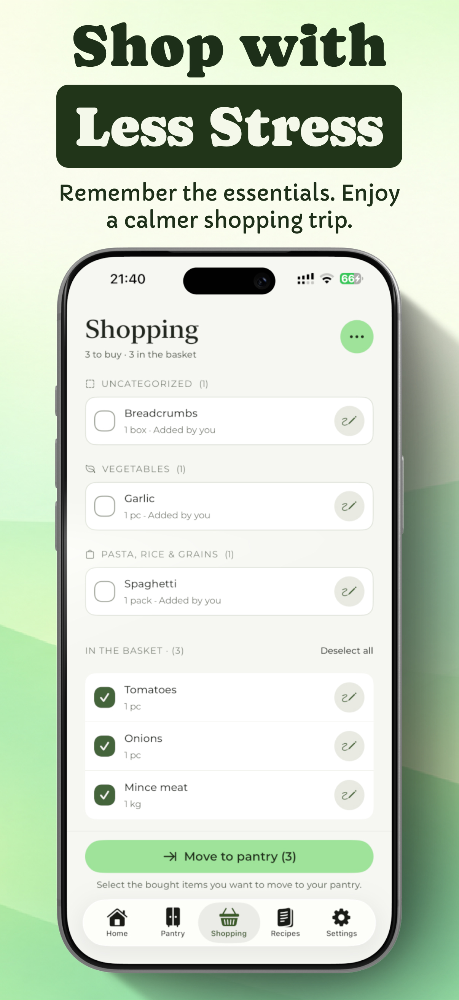
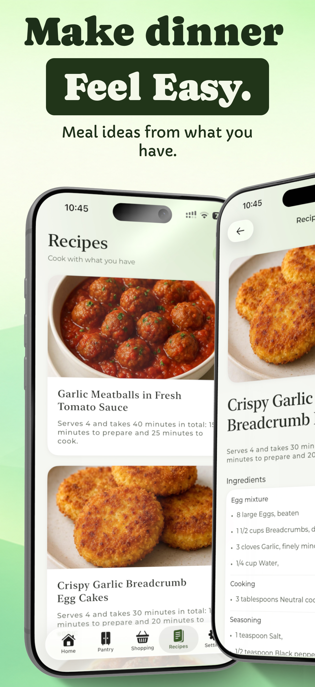
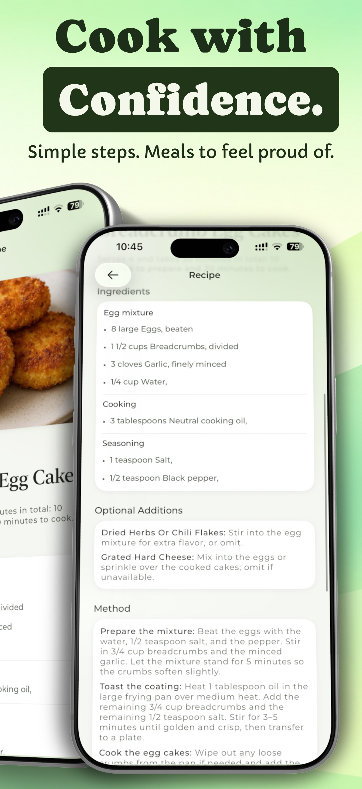

Know what’s at home
See your pantry items, quantities and storage locations. Keep an eye on what’s running low or out of stock.
A little top-up, all sorted.
Feel organised with pantry, shopping and recipes in one place. Know what’s at home, remember the essentials and make dinner feel easy.

Make room for your day
Keep your everyday essentials organised, your shopping list close and your next meal within reach.
See your pantry items, quantities and storage locations. Keep an eye on what’s running low or out of stock.
Keep the essentials on your shopping list, check them off in the basket and move bought items to your pantry.
Find meal ideas from what you have, then follow ingredients and simple cooking steps.
How it works
A simple rhythm for keeping your home stocked and deciding what to cook.
Add items, record quantities and keep track of where they’re stored.
Add what you need to your list. Check off purchases and move them to your pantry.
Explore meal ideas and follow the recipe’s ingredients and method.
Inside Any Pantry
Take a look at pantry, shopping and recipes together.




Frequently asked
Keep pantry items, quantities and storage locations together with shopping lists and recipes.
Yes. Select bought items in your basket and move them to your pantry.
Explore meal ideas from what you have and follow recipe ingredients, optional additions and cooking steps.
Visit Kensei Craft support or email developer@kenseicraft.com.
Know what you have, remember what you need and make meals to feel proud of.
Explore the features ↑